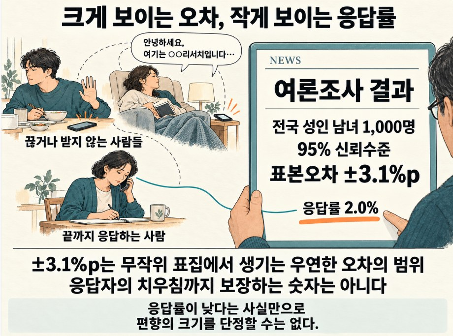
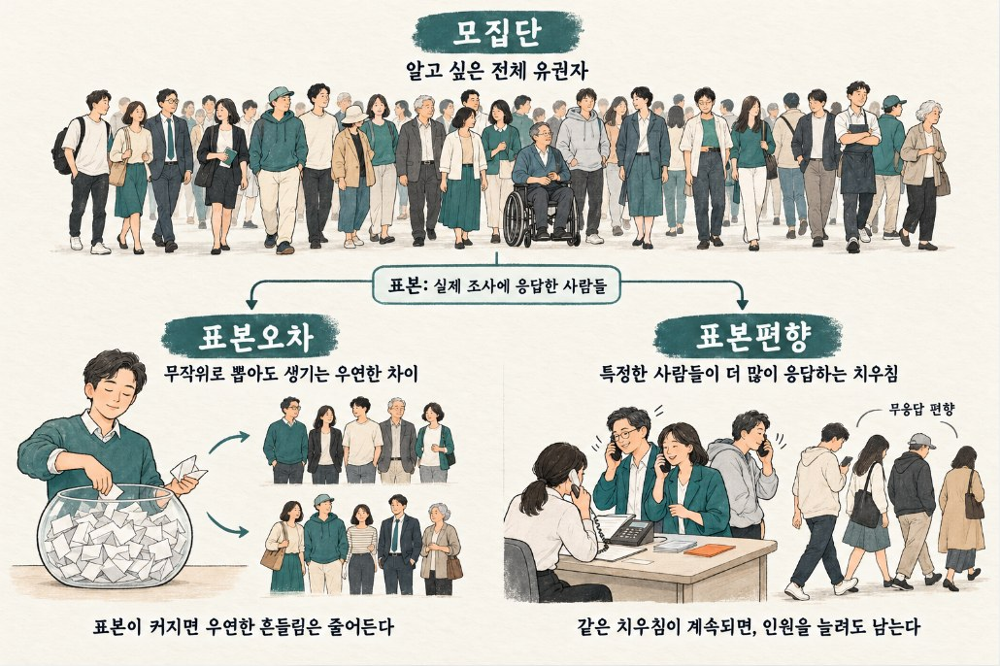
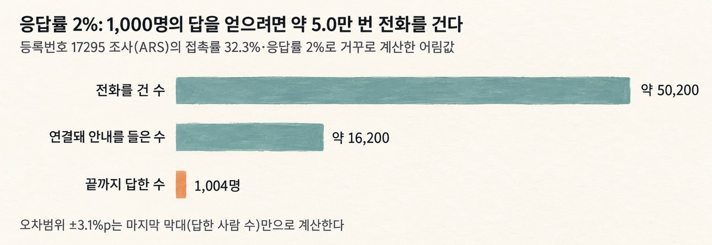
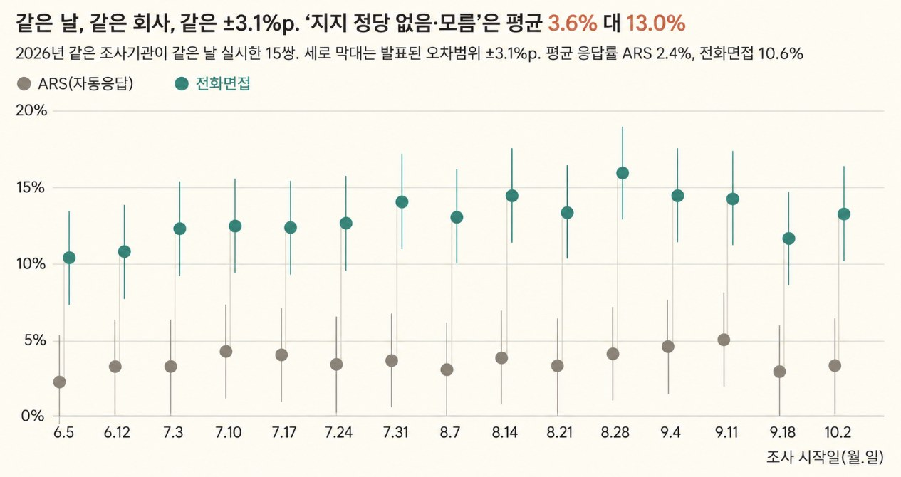
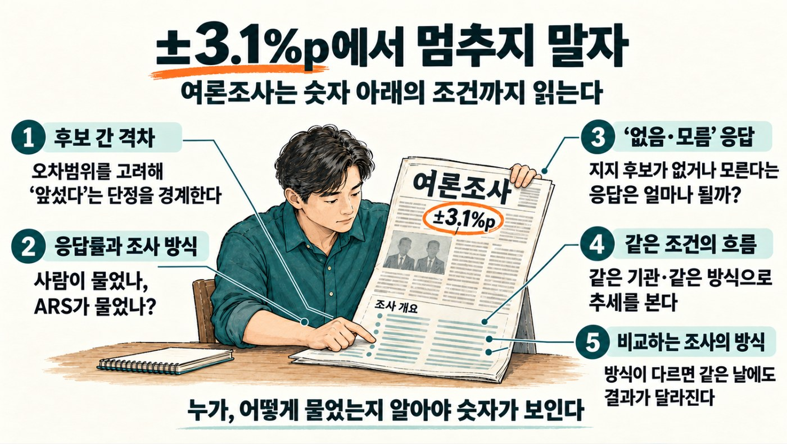

[그 숫자, 누가 셌어요? 7] 응답률 2%짜리 여론조사
응답률 2% 조사도 표본오차는 ±3.1%p. 오차범위가 알려 주는 것과 알려 주지 않는 것을 164건의 조사로 확인합니다.
그 숫자, 누가 셌어요? · 8편 중 8번째 글
연재 목차 보기
대표가 준비 중인 책 『그 숫자, 누가 셌어요?』의 원고를 연재합니다. 숫자는 모두 한국의 공개 자료를 내려받아 대표가 직접 다시 계산했습니다. 자료는 저장소에서 받을 수 있습니다.
선거철이 아니어도 여론조사 기사는 매주 나옵니다. 기사마다 '표본오차 95% 신뢰수준에 ±3.1%p'라는 문구가 붙고, 우리는 이 숫자를 보고 결과를 얼마나 믿을지 가늠합니다. 그런데 같은 기사 맨 아래에는 '응답률 2.0%' 같은 숫자도 작게 적혀 있습니다. 여기까지 보는 사람은 거의 없습니다. 100명에게 전화를 걸어 2명만 끝까지 답한 조사에서, '±3.1%p'라는 표본오차는 무엇을 말해 주는 걸까요? 이 장에서 먼저 짚을 점은 하나입니다. ±3.1%p는 우연히 생기는 흔들림만 알려 줍니다. 누가 답했는지는 알려 주지 않습니다. 이 점을 바탕으로 여론조사 기사를 읽는 순서를 정리합니다.
"안녕하세요, 여기는 ○○리서치입니다"
평일 저녁, 쉬고 있는데 낯선 번호로 전화가 옵니다. 받으면 녹음된 목소리가 흘러나옵니다.
"안녕하세요, 여기는 ○○리서치입니다. 최근 국정 수행 지지도에 대해…"
대부분은 여기서 끊어 버립니다. 아예 받지 않는 사람도 많습니다. 그런데 어떤 사람들은 끝까지 남아 버튼을 누릅니다. 두 번째 질문, 세 번째 질문, 지루한 마지막 질문까지 답합니다.

며칠 뒤 그 결과가 뉴스에 나옵니다.
"전국 성인 남녀 1,000명 대상, 표본오차 95% 신뢰수준에 ±3.1%p."
그리고 기사 맨 아래, 눈에 잘 띄지 않는 작은 글씨로 한 줄이 붙습니다. "응답률 2.0%."
±3.1%p는 무엇을 알려 줄까
여론조사 기사에서 우리가 습관처럼 확인하는 숫자는 하나입니다. 바로 '±3.1%p'라는 표본오차입니다. 진짜 민심이 이 범위 안에서 오르내릴 수 있다는 뜻이어서, 두 후보의 차이가 이 범위 안이면 기사는 '오차범위 내 접전'이라고 씁니다.
그러다 보니 표본오차가 그 조사를 얼마나 믿을 수 있는지(신뢰도)를 모두 말해 준다고 생각하게 됩니다. 어느 조사나 '±3.1%p'를 달고 나오니, 모든 조사를 똑같이 믿어도 되는 것처럼 느끼는 것입니다.
알아두면 좋은 통계 · 표본편향과 오차범위
우리가 알고 싶은 전체 유권자 집단을 '모집단', 그중 실제로 답을 받은 사람들의 모임을 '표본'이라고 부릅니다. 여론조사의 모집단은 전국 유권자 전체이지만, 실제 표본은 끝까지 전화에 응한 1,000명입니다.

표본으로 모집단의 민심을 짐작할 때는 크게 두 가지 오차가 생깁니다.
1. 표본오차 (Sampling Error):
- 아무리 무작위로 공정하게 뽑아도 우연히 생기는 오차입니다. 표본이 클수록 줄어듭니다. 기사에서 보는 '±3.1%p'가 이 표본오차이고, 오차범위라고도 부릅니다. '95% 신뢰수준'은 같은 방식으로 조사해서 범위를 100번 만들면, 그중 약 95번은 그 범위 안에 진짜 민심(참값)이 들어 있다는 뜻입니다. 거꾸로 말하면 20번 중 1번은 진짜 민심이 범위 밖에 있다는 뜻입니다. 95%는 100%가 아닙니다.
2. 표본편향 (Sampling Bias):
- 표본에 들어오는 사람이 무작위로 섞이지 않고 특정 성향 쪽으로 치우쳐서 생기는 오차입니다. 표본을 아무리 늘려도 줄어들지 않습니다. 응답할지 말지를 사람들이 스스로 정하기 때문에 생기는 편향은 응답편향(무응답 편향)이라고 부릅니다.
3. 동전으로 보는 표본오차
- 공정한 동전을 10번 던지면 앞면 비율이 30%일 때도 70%일 때도 있습니다. 하지만 1,000번 던지면 앞면 비율은 거의 언제나 50% 근처로 모입니다. 조사에서 답한 사람이 많을수록 오차가 줄어드는 것도 같은 이치입니다. 구체적인 숫자는 7.6절에서 봅니다.
그런데 이 '접전' 기준은 생각보다 느슨합니다. ±3.1%p는 지지율 하나에 붙는 오차이고, 두 후보의 격차는 이보다 더 크게 흔들립니다.
예를 들어 A 후보 42%, B 후보 40%라고 해 봅시다. 조사에서 A가 우연히 더 뽑히면 B는 덜 뽑히기 쉬워서, 두 숫자의 차이는 각각의 오차보다 크게 흔들립니다. 이 예에서 격차 2%p의 오차범위는 약 ±5.6%p입니다. 기사가 '오차범위 밖 우세'라고 쓴 3~5%p 격차도 사실은 접전일 수 있다는 뜻입니다. 그렇다고 이 숫자만으로 조사를 믿을 수 있는지까지 알 수는 없습니다. 기사 바닥의 작은 글씨 '응답률'은 다음 절에서 보겠습니다.
응답률과 조사 방식부터 확인한다
선거여론조사는 결과를 공표하기 전에 중앙선거여론조사심의위원회에 등록해야 합니다. 위원회는 매주 등록된 전국단위 조사의 주요 데이터를 공개합니다. 저는 2026년 5월 말부터 10월 초까지 19주 치를 모아 분석했고, 조사는 모두 164건이었습니다.
응답률의 중앙값은 3.7%였습니다. 조사 3건 중 1건은 응답률이 3% 이하였고, 가장 낮은 조사는 1.4%였습니다.
응답률 2%는 100명에게 전화를 걸었을 때 2명만 끝까지 답하고 98명은 끊거나 거부했다는 뜻입니다. 기사에 적힌 '표본 1,000명' 뒤에는, 1,000명을 채우려고 약 5만 명에게 연락해야 했던 사정이 숨어 있는 셈입니다.
조사 방식(자동응답(ARS)인지, 전화면접인지)에 따라 응답률도 크게 달랐습니다.
조사 방법 조사 수 응답률(가운데 가장 낮은 가장 높은 값) 응답률 응답률 ————— ————– ————— ————– ————– 자동응답(ARS) 123건 3.4% 1.5% 7.9%
전화면접 37건 10.7% 8.7% 26.0%
ARS는 녹음된 목소리에 휴대전화 버튼으로 답하는 방식이고, 전화면접은 상담원이 직접 묻고 답을 받아 적는 방식입니다. 164건 가운데 4건 중 3건(123건)이 ARS였습니다. 위 표에서는 ARS와 전화면접을 섞은 혼합조사 4건을 뺐습니다.
두 방식 모두 대다수가 전화를 끊거나 응답을 거부했습니다. 그런데 기사에 찍히는 표본오차는 대부분의 조사에서 똑같이 '±3.1%p'입니다. 응답률이 1.4%인 조사나 그보다 높은 조사나 표본오차는 같습니다.
끝까지 답한 사람은 누구일까
응답률이 낮다는 사실만으로 문제가 되는 것은 아닙니다. 끝까지 답한 2%가 전화를 끊은 98%와 생각이 같다면 괜찮습니다. 큰 냄비에 끓인 김치찌개를 맛볼 때, 국물을 잘 저었다면 한 숟가락만 떠서 간을 봐도 전체 맛을 알 수 있는 것과 같습니다.
문제는 여론조사 전화가 냄비를 저어 주지 않는다는 점입니다. 낯선 번호로 걸려온 녹음된 목소리가 "최근 국정 수행 지지도에 대해…"라고 말하면, 정치에 관심이 없거나 피곤한 사람은 먼저 끊습니다. 이 지루한 전화를 끝까지 붙들고 있는 사람은 정치에 할 말이 많거나 지지하는 정당이 뚜렷한 사람일 가능성이 큽니다. 냄비를 젓지 않고 윗물만 떠서 간을 보면, 국물이 아니라 건더기가 많이 담기는 것과 비슷합니다.
이 생각이 맞다면, 응답률이 낮은 조사일수록 '지지하는 정당이 없다'거나 '잘 모르겠다'는 응답이 적게 나와야 합니다. 164건을 살펴보니 실제로 그랬습니다. '없음'과 '모름/무응답'을 더한 비율(이 책에서는 '유보 비율'이라고 부르겠습니다)의 중앙값이 ARS 조사(123건)에서는 10.1%, 전화면접 조사(37건)에서는 24.0%로 두 배 이상 차이가 났습니다(ARS와 전화면접을 섞은 혼합조사 4건은 뺐습니다).
하지만 이것만으로는 확실한 증거가 되기 어렵습니다. ARS를 주로 하는 회사와 전화면접을 주로 하는 회사의 성향이 다를 수 있고, 질문 문장이나 조사 날짜도 제각각이기 때문입니다.
응답률이 낮을수록 표본편향이 생길 여지가 커집니다. 그림 7-3은 응답률 2.0%인 조사가 응답 1,000명을 모으기까지 얼마나 많은 사람이 거절했는지 거꾸로 계산해 보여 줍니다.

그렇다고 편향이 반드시 크다는 것은 아닙니다. 다만 전화를 끊은 98%가 어떤 생각인지는 여론조사 자료만으로는 알 수 없습니다. 그래서 편향이 있는지 확인하려면 다른 방식으로 한 조사와 비교해 보는 수밖에 없습니다.
여기서 이런 질문이 나올 수 있습니다. 조사 회사는 응답자의 성별·연령·지역 비율을 전체 유권자에 맞춰 조정하지 않나요? 맞습니다. 이것을 가중값 보정이라고 부르고, 대부분의 조사가 합니다. 하지만 이 보정은 성별·연령·지역처럼 겉으로 드러나는 차이만 맞춰 줍니다. 정치에 관심이 많은 사람이 전화를 더 오래 붙들고 있는 것 같은 차이는 눈에 보이지 않아서 맞추기 어렵습니다. 그래서 조사 방법만 다르고 나머지는 같은 조사끼리 비교해 보았습니다.
같은 날, 두 방법, 15주
164건을 살펴보다가 눈에 띄는 '쌍(Pair)'을 찾았습니다. 한 조사기관이 2026년 6월부터 거의 매주, 같은 날에 서로 다른 두 방식으로 조사를 해 온 것입니다. 하나는 기계음이 묻고 버튼으로 답하는 ARS 방식이었고, 다른 하나는 상담원이 직접 묻는 전화면접 방식이었습니다.
두 조사 모두 휴대전화(무선) 번호를 썼고, 응답 완료 수도 1,000명 안팎이었으며, 기사에 나온 표본오차도 모두 '±3.1%p'였습니다. 조사 방식만 다르고 나머지는 거의 같은 쌍이 15개였습니다.

그림 7-4에서 15주 내내 두 점은 한 번도 가까워지지 않았습니다. '지지하는 정당이 없다'거나 '모르겠다'는 유보 응답 비율은 ARS에서는 평균 3.6%, 전화면접에서는 평균 13.0%였습니다. 두 방법의 차이는 매주 7.5~11.9%p로, 어느 주든 기사에 나온 오차범위의 두 배를 넘었습니다. 세로 막대로 그린 ±3.1%p의 오차범위는 두 조사 방식 사이에서 거의 겹치지 않았습니다.
응답률도 매주 크게 달랐습니다. ARS의 평균 응답률은 2.4%, 전화면접은 10.6%로 네 배 넘게 높았습니다. 사람이 직접 물으니 응답하는 사람의 폭이 넓어졌고, 새로 들어온 사람 중에는 "지지하는 정당이 없다"고 답한 중도층이 많았을 수 있습니다.
같은 날 같은 기관이 물었는데도 이렇게 다른 결과가 나온 것은 답을 모은 방식이 달랐기 때문일 가능성이 큽니다. 기계가 물으면 지지가 뚜렷한 사람이 끝까지 남고, 사람이 물으면 마음을 정하지 못한 사람도 더 남는 것으로 보입니다. 다만 사람 앞에서는 정치 성향을 밝히기 꺼려 "잘 모르겠다"고 답한 사람이 늘었을 가능성도 있어서, 차이의 원인을 한 가지로 단정할 수는 없습니다.
오차범위는 응답률을 모른다
기사에 나오는 ±3.1%p는 '끝까지 답한 사람 수' 하나만으로 계산합니다. 1,000명이 답했으면 ±3.1%p입니다.
1,000명에게 지지 정당을 묻는 일은 동전을 1,000번 던지는 것과 비슷합니다. 여기서는 앞면이 몇 번 나왔는지가 아니라 앞면 비율을 봅니다. 1,000번 던지는 시도를 100번 하면, 그중 약 95번은 앞면 비율이 46.9%~53.1% 안에 들어옵니다. 이것이 ±3.1%p입니다. 던지는 횟수가 4배인 4,000번이 되면 이 범위는 절반(약 ±1.5%p)으로 줄어듭니다.
동전은 앞면이 나올 확률이 50%인 경우입니다. 실제 오차는 지지율이 50%일 때 가장 크고, 기사에는 이 가장 큰 값을 그대로 적습니다.
여기서 중요한 점은 이 범위를 정하는 것이 실제로 던진 횟수뿐이라는 것입니다. 동전을 몇 번 던질 생각이었는지는 상관없습니다. 여론조사도 마찬가지입니다. 5만 명에게 전화해서 1,000명이 답했든, 5,000명에게 전화해서 1,000명이 답했든 오차는 똑같이 ±3.1%p입니다. 응답률은 이 계산에 들어가지 않습니다.
왜 그럴까요? 이 숫자는 '답한 1,000명이 전체 유권자 중에서 제비뽑기하듯 공정하게 뽑혔다'고 가정하고 계산하기 때문입니다. 그래서 알려 주는 것은 운이 나빠서 한쪽 사람이 조금 더 뽑히는 정도의 흔들림뿐입니다. 한쪽 성향의 사람들이 스스로 더 많이 답해서 생기는 치우침(표본편향)은 이 숫자에 들어 있지 않습니다.
정리하면, ±3.1%p는 운이 얼마나 끼어들었는지를 알려 줍니다. 누가 답했는지는 응답률과 조사 방식을 봐야 짐작할 수 있습니다. 두 가지는 따로 봐야 합니다.
7.5절의 15주 자료가 그 증거입니다. 두 조사 모두 매주 ±3.1%p를 달았는데, 실제 차이는 매주 7.5~11.9%p였습니다. 문제가 우연뿐이라면 어느 쪽이 더 높을지는 매주 동전 던지기처럼 반반입니다. 그런데 15주 내내 전화면접이 더 높았습니다. 동전을 15번 던져 모두 같은 면이 나오는 것과 같고, 확률은 약 16,000분의 1입니다.
어느 쪽이 진짜 민심에 가까운지는 이 자료만으로는 알 수 없습니다. 전화면접도 응답률이 10% 정도라서 90%는 전화를 끊었고, 상담원 앞에서는 속마음을 감추고 '잘 모르겠다'고 하기도 쉽습니다. 분명한 것은 두 조사가 서로 다른 사람들의 목소리를 모았다는 점입니다. 그 차이는 ±3.1%p 안에 담겨 있지 않습니다. 다만 이 15쌍은 한 기관의 조사이므로, 다른 기관도 같다고 말할 수는 없습니다.
여론조사 기사 읽는 순서
평일 저녁 휴대폰을 울린 그 전화로 돌아가 봅시다. 귀찮아서 끊는 순간, 당신의 생각은 그 조사에서 빠집니다. 빈자리는 기계음이나 상담원의 질문을 끝까지 견딘 사람들의 목소리로 채워집니다. 그래도 기사에 찍히는 표본오차는 ±3.1%p 그대로입니다.

기사를 만나면 ±3.1%p에서 멈추지 말고 시선을 맨 아래까지 내려 다음 다섯 가지를 확인해 보세요.
두 후보의 격차가 오차범위의 두 배쯤(예: ±6%p) 안에 들어오는가? 들어오면 '앞섰다'가 아니라 '접전'입니다.
응답률은 얼마이고, 사람이 직접 물었는가, 기계(ARS)가 물었는가? 방식이 다르면 끝까지 답하는 사람도 다릅니다.
'없음·모름' 응답은 얼마나 되는가? 너무 적으면 끝까지 남은 사람이 한쪽으로 쏠렸을 수 있습니다.
같은 기관이 같은 방식으로 꾸준히 해 온 조사인가? 그렇다면 숫자 하나보다 오르내림(추세)을 보세요. 방식이 같으면 치우침도 비슷할 가능성이 커서, 흐름은 어느 정도 읽을 수 있습니다.
방식이 다른 조사끼리 숫자를 그대로 비교하고 있지 않은가? 같은 날 같은 기관이어도 방식이 다르면 7.5절처럼 결과가 크게 달랐습니다.
이 다섯 가지를 확인해도 전화를 끊은 사람들의 생각까지는 알 수 없습니다. 그래도 ±3.1%p라는 숫자를 얼마나 믿을지 정하는 데는 도움이 됩니다.
마치며
같은 기관이 같은 날 ARS와 전화면접으로 한 15쌍의 여론조사를 보니, '지지하는 정당이 없다'거나 '잘 모르겠다'는 응답 비율이 매주 7.5~11.9%p 벌어졌습니다. 그런데 두 조사가 나란히 단 표본오차는 똑같이 ±3.1%p였습니다. 여론조사 기사는 오차범위 하나만 보지 말고, 격차·응답률·조사 방식·'없음·모름' 비율까지 함께 읽어야 합니다.
같은 문제는 정치 여론조사에만 있지 않습니다. 회사의 직원 만족도 조사나 쇼핑몰의 상품 후기도 스스로 마음먹고 응답한 사람들이 빈칸을 채우는 구조입니다. 직원 중 몇 명이 참여했는지, 구매 고객 중 몇 %가 후기를 남겼는지 모르면, '평균 만족도 점수' 뒤에서 침묵한 대다수의 생각은 보이지 않습니다.
직접 확인해 보기
파일: github.com/einfollab/basic_statics ▸ 7.중앙선거관리위원회여론조사 ▸ 합친표_선거여론조사_164건.csv (PDF 19개를 한 표로 합친 파일)
챗GPT에게 이렇게 물어보세요
파일을 올린 뒤 아래 문장을 하나씩 붙여 넣으면 됩니다. PDF 19개를 직접 합치고 싶다면 맨 아래 안내를 보세요.
이 파일은 선거여론조사 164건을 한 줄씩 적은 표야. 응답률의 중앙값과 가장 낮은 값을 알려 줘. 조사방법별(ARS, 전화면접, 혼합) 조사 건수도 알려 줘.
'없음'과 '모름/무응답'을 더한 값을 '유보 비율'이라고 부르자. 혼합조사는 빼고, ARS 조사와 전화면접 조사로 나눠 유보 비율의 중앙값을 구해 줘.
같은 조사기관이 같은 날 ARS와 전화면접을 둘 다 한 쌍을 찾아 줘. 쌍이 몇 개인지 알려 주고, 쌍마다 유보 비율과 응답률을 나란히 보여 줘. 전화면접이 더 높은 쌍이 몇 개인지도 알려 줘.
확인할 것
이 숫자가 나오면 맞습니다. 응답률 중앙값 3.7%, 가장 낮은 값 1.4%이고, 조사 건수는 ARS 123건, 전화면접 37건, 혼합 4건입니다. 유보 비율의 중앙값은 ARS 10.1%, 전화면접 24.0%입니다. 같은 기관·같은 날 쌍은 15개이고, 15쌍 모두 전화면접이 더 높습니다(유보 비율 평균은 ARS 3.6%, 전화면접 13.0%). 숫자가 다르면 챗GPT에게 "어떤 열로 계산했는지 보여 줘"라고 물어보세요.
PDF에서 직접 합치려면 이렇게 물어보세요. "이 PDF들의 표를 하나의 표로 합쳐 줘. 열은 등록번호, 조사기관, 조사일자, 조사방법, 표본수, 접촉률, 응답률, 오차범위, 없음, 모름/무응답으로 해 줘. 여러 줄로 나뉜 칸은 한 줄로 합치고, 합친 뒤 조사 건수를 알려 줘." 조사 건수가 164건이어야 맞습니다. PDF 표는 칸이 나뉘어 숫자가 밀리기 쉬우니, 주마다 조사 건수가 PDF 첫 줄의 '총 ○○건'과 맞는지 먼저 확인하세요. 더 많은 질문과 파일 설명은 저장소 폴더의 README에서 볼 수 있습니다.
자료 출처
- 중앙선거여론조사심의위원회, 주간 전국단위 선거여론조사 결과 주요 데이터, 2026년 5월 4주~10월 1주(등록기간 2026.5.25~10.4) 19개 파일, 조사 164건.